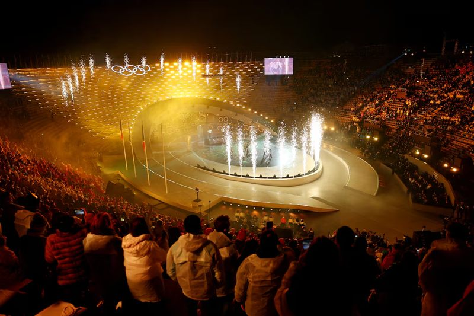
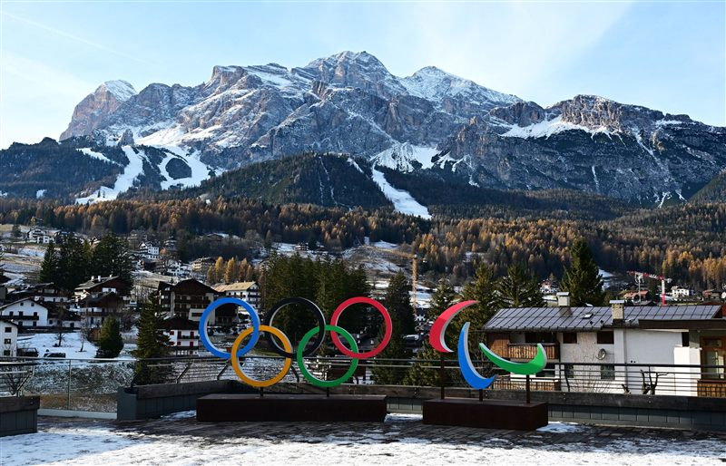
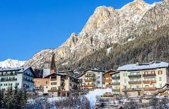
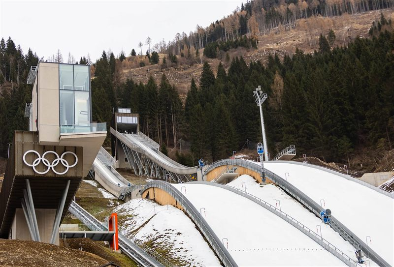
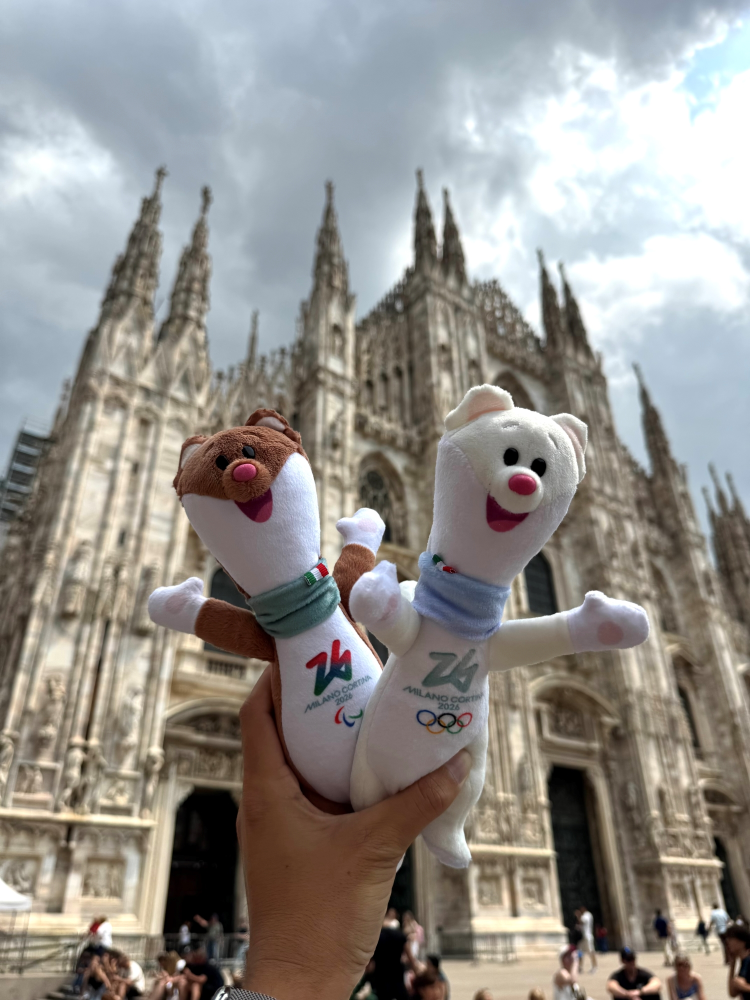
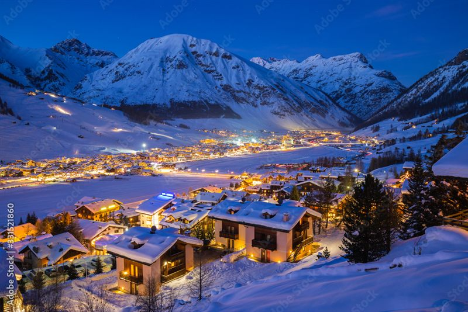

Anecdote
Les Milanais ont une obsession quasi-religieuse pour le spritz, mais ils le font avec du Campari (pas de l'Aperol, c'est une affaire sérieuse). Des bars du centre ont littéralement perdu des clients en leur servant la mauvaise version. Pour eux, c'est à peu près aussi grave qu'une faute de goût en fashion week.

Le saviez-vous ?
Cortina d'Ampezzo se prend tellement au sérieux en tant que « reine des Dolomites » que la ville a officiellement refusé plusieurs fois d'être associée à des projets jugés « pas assez chics ». Il y a quelques années, une enseigne de fast-food a tenté de s'installer en centre-ville et s'est fait poliment mais fermement éconduire. À Cortina, même les chiens de traîneau portent probablement du Canada Goose.

Le saviez-vous ?
L'Arena di Verona, amphithéâtre romain construit en l'an 30 apr. J.-C., accueillera les cérémonies de remise des médailles des JO 2026. L'une des arènes antiques les mieux conservées au monde, elle peut accueillir jusqu'à 22 000 spectateurs sous les étoiles.

Le saviez-vous ?
La Stelvio est l'une des pistes les plus redoutées du circuit : 3,3 km de descente, 1 000 m de dénivelé et des passages à 65 % de pente. Elle accueille la Coupe du Monde depuis 1985 et voit les athlètes dépasser les 130 km/h.

Le saviez-vous ?
Tesero est un village de 3 000 habitants dans la vallée de Fiemme, et il a produit un nombre absurde de champions olympiques de ski de fond. Le ratio médailles/habitants y est tellement délirant que les habitants ont fini par appeler leur vallée « la vallée des champions » complètement sérieusement, sans ironie.

Le saviez-vous ?
Predazzo abrite le musée géologique des Dolomites, parce que c'est ici qu'au XIXe siècle des géologues ont compris que les Dolomites étaient d'anciens récifs coralliens. Ce qui voulait dire que ces montagnes spectaculaires étaient autrefois au fond d'une mer tropicale. Personne n'a voulu les croire au départ.

Anecdote
Anterselva possède un lac glaciaire à 1 642 mètres d'altitude qui gèle si régulièrement et si parfaitement en hiver que les habitants s'en servaient comme route officielle pour traverser la vallée. Une route sur un lac, utilisée pendant des siècles, complètement normale pour eux.

Le saviez-vous ?
En hiver, Livigno est régulièrement coupée du reste de l'Italie par les chutes de neige, et pendant des siècles les habitants ont développé un dialecte local si particulier que les villages voisins avaient du mal à les comprendre. L'isolement forcé a littéralement fabriqué une langue à part entière dans une vallée de montagne.

Au centre de la plus célèbre place de Milan, le premier roi de l'Italie unifiée veille sur le Duomo depuis son cheval de bronze. Sculpté par Ercole Rosa et inauguré en 1896, le monument fige Victor-Emmanuel II en plein élan, le regard tourné vers la cathédrale.